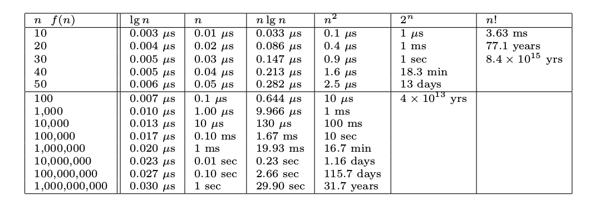

A notebook of things I read and notes to remember the content better. Expect no coherent shape.
https://www.youtube.com/watch?v=IyNPeTn8fpo - Scrum et al. Ken Schwaber
MySQL accepts X.509 in auth, which is governed by hierarchical CAs, much different to PGP's web of trust.
Query cache can store only SELECT statements, along with their result sets. ... the server doesn’t need to parse, optimize, or execute the query at all, it can simply pass back the stored result set. (:fa-question: How does invalidation work?)
shared locks and exclusive locks, or read locks and write locks. Read locks on a resource are shared, or mutually nonblocking: many clients can read from a resource at the same time. Write locks, on the other hand, are exclusive—i.e., they block both read locks and other write locks.
Percona XtraDB is a storage engine for the MariaDB and Percona Server databases, and is intended as a drop-in replacement to InnoDB, which is one of the default engines available on the MySQL database. XtraDB incorporates InnoDB's ACID-compliant design and MVCC architecture, and allows for a greater degree of tuning and scalability. The engine is also better suited to multi-core processing, which addresses some of the issues known to InnoDB
Transactions aren’t enough unless the system passes the ACID test. ACID stands for Atomicity, Consistency, Isolation, and Durability.
Reading uncommitted data is also known as a dirty read.
phantom read can happen when you select some range of rows, another transaction inserts a new row into the range, and then you select the same range again;
The way InnoDB currently handles deadlocks is to roll back the transaction that has the fewest exclusive row locks (an approximate metric for which will be the easiest to roll back).
multiversion concurrency control (MVCC), there is no standard for how MVCC should work. You can think of MVCC as a twist on row-level locking; it avoids the need for locking at all in many cases and can have much lower overhead. Depending on how it is implemented, it can allow nonlocking reads, while locking only the necessary rows during write operations.
In InnoDB, primary key column is part of secondary indexes so they grow large if primary is large - clustered index.
InnoDB, unlike other storage engines, supports hot backup - Oracle’s proprietary MySQL Enterprise Backup and the open source Percona XtraBackup. MySQL’s other storage engines can’t take hot backups—to get a consistent backup, you have to halt all writes to the table, which in a mixed read/write workload usually ends up halting reads too.
ballpark figure, guesstimate, an educated guess or estimation within acceptable bounds.
MySQL supports manual and automatic checking and repairing of MyISAM tables, but don’t confuse this with transactions or crash recovery. After repairing a table, you’ll likely find that some data is simply gone.
FederatedX, sotrage engine that allows connecting to other systems rather than stroing data.
TokuDB uses a new index data structure called Fractal Trees, which are cache-oblivious, so they don’t slow down as they get larger than memory, nor do they age or fragment.
RethinkDB, ~~Falcon~~, The NDB Cluster engine, The Merge storage engine, The Memory engine, The CSV engine, The Blackhole engine, Infobright (column storage).
Some good GIS in MySQL 5.7
It is very possible for O(N) code to run faster than 0(1) code for specific inputs. Big 0 just describes the rate of increase.
Amortized Time
the asymptotic analysis of worst-case complexity.RAM model:
Each memory access takes exactly one time step. Further, we have as much memory as we need. The RAM model takes no notice of whether an item is in cache or on the disk.
The Big Oh notation ignores the difference between multiplicative constants.
The functions f(n) = 2n and g(n) = n are identical in Big Oh analysis

Function names:
Superlinear: f(n) = n lg nFactorial: f(n) = n!... is of greater order than ...
n! ≫ 2ⁿ ≫ n³ ≫ n² ≫ n log n ≫ n ≫ log n ≫ 1
O(f(n)) + O(g(n)) → O(max(f(n), g(n))) - sum of two functions is governed by the dominant one
:fa-exclamation-triangle: f(n) = O(n²), g(n) = O(n²), f(n) + g(n) = O(n²), not very intuitive
Logarithms arise in any process where things are repeatedly halved.
How many bits do we need to store 256 values? 8!
math.log2(256) 8.0
binary logarithm, natural log, common logarithm (base 10)
Why is log base ignored in Big Oh?
The base of the logarithm has no real impact on the growth rate- Compare the following three values: log 2 (1, 000, 000) = 19.9316, log 3 (1, 000, 000) = 12.5754, and log 100 (1, 000, 000) = 3. A big change in the base of the logarithm produces little difference in the value of the log. Changing the base of the log from a to c involves dividing by log c a. This conversion factor is lost to the Big Oh notation whenever a and c are constants. Thus we are usually justified in ignoring the base of the logarithm when analyzing algorithms.
traveling salesman problem - TSP
There is a fundamental difference between algorithms, which always produce a correct result, and heuristics, which may usually do a good job but without providing any guarantee.
set has 2ⁿ subsets - set A is a subset of B if all elements of A are elements of B
abc: a, b, c, ab, ac, bc, abc, ∅
abcd:a, b, c, d, ab, ac, ad, bc, bd, cd, abc, abd, acd, bcd, abcd, ∅
The earliest completion algorithm
Take-Home Lesson: Reasonable-looking algorithms can easily be incorrect. Al- gorithm correctness is a property that must be carefully demonstrated.
QED - quod erat demonstrandum - which is what had to be shown" or "thus it has been demonstrated."
Take-Home Lesson: The heart of any algorithm is an idea. If your idea is not clearly revealed when you express an algorithm, then you are using too low-level a notation to describe it.
The best way to prove that an algorithm is incorrect is to produce an instance in which it yields an incorrect answer. Such instances are called counter-examples.
greedy algorithm
Go for a tie – A devious way to break a greedy heuristic is to provide instances where everything is the same size. Suddenly the heuristic has nothing to base its decision on, and perhaps has the freedom to return something suboptimal as the answer.
Σ, the summation operator
The reason both seemed like magic is because recursion is mathematical induc- tion.
Take-Home Lesson: Mathematical induction is usually the right way to verify the correctness of a recursive or incremental insertion algorithm.
The correctness of this algorithm is certainly not obvious to me. But as it is recursive and I am a computer scientist, my natural instinct is to try to prove it by induction.
1.3.4 I do not understand: inductive proof of some recursion.
Θ - “big Theta” notation (Θ(x))
To exploit the algorithms literature, you must learn to describe your problem abstractly, in terms of procedures on fundamental structures.
graph = vertices + adges
Delete the first element of a permutation of {1, . . . , n} things and you get a permutation of the remaining n − 1 things. Permutations are recursive objects...
covering problem / combinatorial algorithm
NP-complete
binomial coefficient - "n choose k", because there are (n|k) ways to choose a subset of size k elements
∧ - logical conjunction, AND
∈ - element
⌊x⌋ = floor(x)
⌈x⌉ = ceiling(x)
/ˈkwəʊʃənt/ - dzielnik
How lifters really train?
Performing more than 6 reps per set hinders strength development
iron cross
Understanding Python metaclasses
__qualname__ - qualified path to the objectPython Design Patterns: For Sleek And Fashionable Code
How to select the first/last/max row per group in SQL
UNION ALLONLY_FULL_GROUP_BYTribes. We need you to lead us
Don't manage, establish values.
Few very useful sentences. A lot of sell talk, NLP like.
The Power of Habit: Why We Do What We Do in Life and Business
The Pragmatic Programmer: From Journeyman to Master